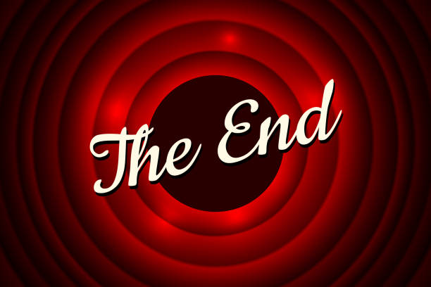

“Run!” you yell at Jungle John. Both of you sprint toward the doorway and down the hallway,
the statues right on your tails. Running as fast as you can, you watch as the Jungle Jewel slips out of your hand…
“Quickly swing over the forest pit” Jungle John yells at you. “But the Jungle Jewel…” you start, “NO TIME” Jungle John yells at you.
Listening to Jungle John, you grab the loosely-held vine and manage to swing over the forest pit successfully this time. Unfortunately,
the statues aren’t slowing down. You watch as the hallways start crumbling behind you. You look at Jungle John, he looks at you, and you
both realize one thing at the same time. These statues are destroying the Tiger Temple! Both of you sprint at full speed and out of the
Tiger Temple. You both jump into the nearest bush and watch as the statues smash through the entrance of the Tiger Temple.
You watch in horror as the Tiger Temple comes crashing down. Both statues run directly into the forest, gone forever.
Jungle John and you slowly
emerge from the bush and stare at the
rubble that was once the Tiger Temple. You look at Jungle John,
only to see his face in complete and utter shock. “I can’t believe this,” he tells you,
“the temple was ancient history, and now it’s completely destroyed, before my very own eyes.
You don’t know what to tell him, so you continue to stare at the rubble before you, but something catches your eye.
“Jungle John look!” you tell him. You point to something sparkly in the distance… it’s the Jungle Jewel! Both of you run
towards the jewel and Jungle John dives into the rubble and retrieves the Jewel.
“We did it!” Both of you scream and shout at the top of your lungs. After your successful victory dance,
Jungle John grabs you by the shoulders, looks you in the eye, and tells you, “Thank you, Thank you so much, I really could not have done this without.”
Jungle John pulls you in for a long hug and you happily hug him back. “Now let’s go show the world this!” Jungle John raises the Jungle Jewel
high in the sky and the both of you head off into the Jungle, with wide smiles and the sparkly Jungle Jewel in your hand.
